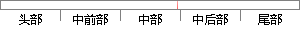

。积分作用常与另两种调节规律结合 形成 PI或PID 控制器 。微分 系数 ：微
片段位置图

相似结果
相似片段：
便请谅解。... 为什么采用I调节器及PI调节器能实现无静差? 积分作用就越强。反之Ti大则积分作用弱,加入积分调节可使系统稳定性下降,动态响应变慢。积分作用常与另两种调节规律结合,组成PI调节器或PID调节器。 微分调节作用:微...... pi调节器的PI指的是什么 积分作用就越强。反 之Ti大则积分作用弱,加入积分调节可使系统稳定性下降,动态响应变慢。积分作用常与另两种调节规
| 对比库： | WriteCheck云资源库 |
| 来源： | www.aqxls.com.cn 查看来源 |
| 发布时间： | 2015-07-11 |
| 相似率 | 61.54% （轻度抄袭） |